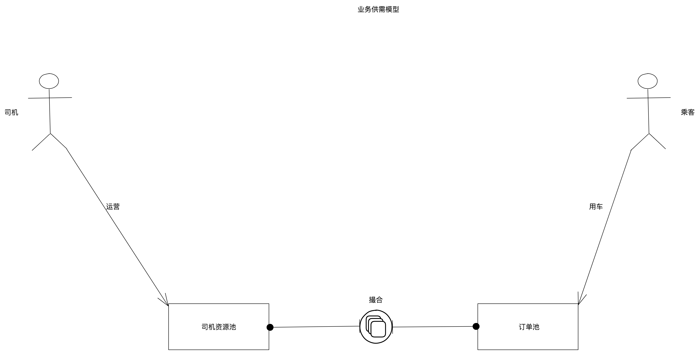
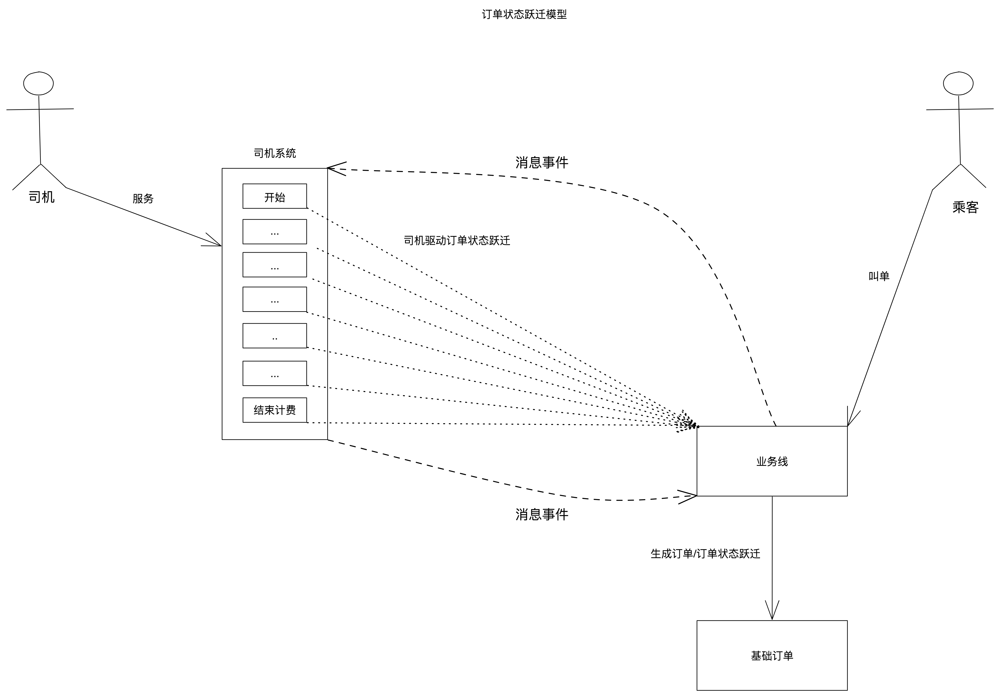

刚接触到打车业务时，很好奇我们的整体业务链路是什么样的？系统如何圈司机？订单通过什么方式派给司机？订单的状态如何跃迁？等等一连串的疑问，困扰着我，当然产生了更加强烈的兴趣，驱使不断学习周边业务。站在目前我所在的业务模块，用图示简略的概括供需撮合、业务驱动、全局架构图，而形成业务闭环，更加细节的系统交互就不作多述。
供需

从该图发现，乘客发起用车，即生成了订单池，而运营的司机是资源池，需要通过撮合系统，司机接单，完成司机-订单的绑定。
跃迁驱动

撮合完成后，业务的开展需司机驱动订单状态跃迁而展开，完成乘客用车流程，整个流程很复杂。
全局架构

全局架构图展现了各个大模块间的交互，整体架构为大中台-小前台。
总结
业务的开始与结束，在业务开展中最终会形成业务闭环（用车端发起–》用车端结束）。